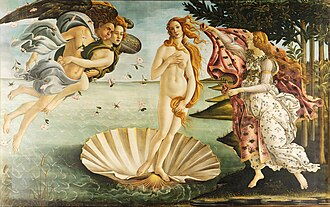

Galeria de Arte
A Noite Estrelada

Autor: Leonardo da Vinci
Técnica: Pintura a óleo sobre madeira de álamo
Dimensões: 77cm × 53cm
Localização: Museu do Louvre
O Nascimento de Vênus

Autor: Sandro Botticelli
Técnica: Têmpera sobre tela
Dimensões: 172.5cm × 278.5cm
Localização: Galleria degli Uffizi, Florença
A Noite Estrelada
Autor: Vincent van Gogh
Técnica: Óleo sobre tela
Dimensões: 73,7cm × 92,1cm
Localização: Museu de Arte Moderna, Nova Iorque, EUA